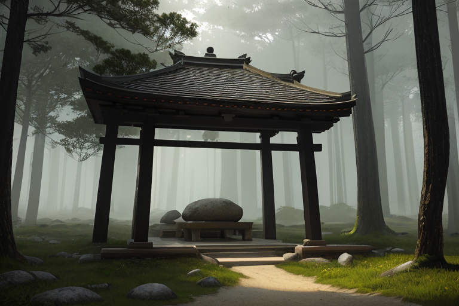
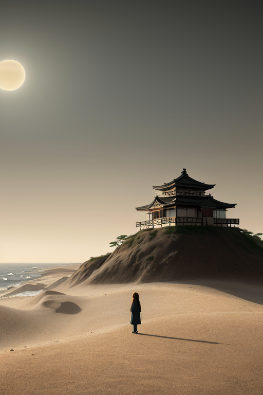
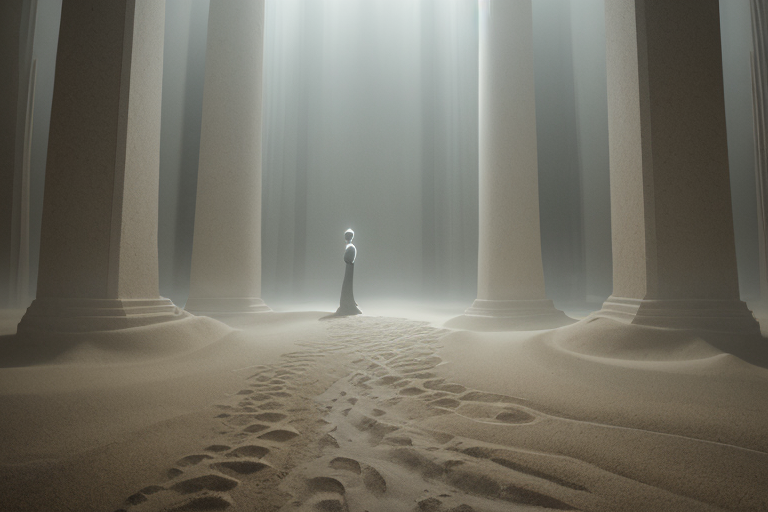
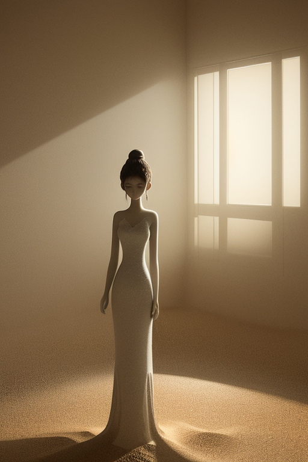
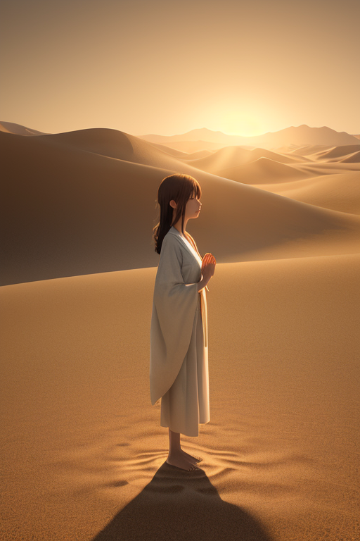

第一章 現実の鳥取
あなたはまだ気づいていない。この土地にも、王がいることを。
大山の裾野、深い杉林に囲まれた神社の境内は、昼なお暗く、音を吸い込む。参拝客の足音さえ、厚い苔と落ち葉に消される。ここには、人の営みを超えた長い時間が堆積している。孤高の霊峰・大山は、その静寂そのものを地層のように積み重ねてきた。訪れる者は、無意識に声を潜め、息を殺す。それは畏れであり、ある種の安らぎでもある。この土地の空気は、余計なものを剥ぎ取る。言葉も、作為も、浅はかな感情も。残るのは己の内側の音だけだ。
砂丘の王、トットリア・デザートは、この静寂の中に立っていた。人の姿はとらない。風が砂紋を描く微かな動き、岩陰にひそむ虫の気配。彼の存在は、そうした自然の「間」に溶け込んでいる。彼の王国「トットリア・デザート」の本質は、この剥き出しの静けさそのものだった。豊穣を約束しない砂地。全てを飲み込む海と空。ここでは、孤独は環境であり、前提であった。彼は長年、それを敵とも味方とも思わなかった。ただ、あるがままの「状態」として認識していた。感情など、この孤高の領域には不要な雑音に過ぎない。

第二章 歪みの兆候
浦富海岸の断崖が、微かに軋んだ。孤砂王トットリアは、その振動を足裏の砂を通じて感知した。日本列島を支える歪みの力が、この地の下でほんの少し、均衡を乱そうとしている。それは物理的な亀裂の前触れではない。彼が感じ取ったのは、この土地に積もる「祈り」のエネルギーそのものの、かすかな乱れだった。
大山の裾野に広がる梨畑で、二十世紀梨の花が一斉に散る時期を、彼は知っている。三朝温泉の湯煙の立ち上るリズムを、彼は記憶している。それらは全て、この土地の生きた呼吸だった。しかし今、その呼吸にほつれが生じている。鳥取城址に立つ時、かつての戦いと鎮魂の念が、砂丘を渡る風と共鳴し、通常とは異なる周波数を発していた。それは人々の無意識の焦りか、あるいは土地そのものの疲れか。
彼は砂丘の頂に立ち、目を閉じた。不要な一切を削ぎ落とす。風の音、砂の動き、遠く日本海の匂い。彼はそれらを濾過し、純粋な「歪みの兆候」だけを抽出する。主席妖精デザリアが彼の傍らに静かに顕現し、砂色の瞳で主君の側面を見つめた。王に感情はない。あるのは認識だけだ。しかし、この祈りの揺らぎを前に、かつてない「認識」が内側に芽生えつつあった。それは、この孤独な監視役という役割そのものに対する、初めての疑念の形をしていた。

第三章 王の葛藤
砂の美術館の静寂は、彼の内面を映す鏡となった。彫刻された砂は、時と共に崩れゆく儚さを内包しながら、今この瞬間だけ完璧な形を留めている。王はその前で、自らの存在を省みた。永劫の監視。微調整の繰り返し。感情を持たぬはずの彼の認識に、一つの「軋み」が生じていた。それは、この果てしない砂時計のような役割に対する、静かな倦怠だった。
デザリアは何も言わない。砂のように、ただ在る。王は問うた。この孤独は、任務を完遂するための必須条件なのか。それとも、自らが進化しつつある証なのか。かつて因幡の白兎が、鰐の背を渡ろうとした時の孤独は、欺きのための道具だった。しかし今、この砂丘の上で彼が感じるそれは、何のためのものか。
答えはない。ただ、大山から流れ来る清冽な水が、砂に染み込むように、疑問だけが深く浸透していく。彼は王である。歪みを調整する者。その役割に、孤独は味方か。敵か。彼は未だ、それを言葉にできなかった。

第四章 妖精との対話
砂の美術館の、静かな展示室。砂像は、細部まで研ぎ澄まされた祈りの形をとっていた。デザリアは、その前に佇む主の傍らで、微かな砂の音を立てた。
「我が王。祈りとは、形のないものを形に留める、砂の器のようなものです」
彼女の声は、砂丘を渡る風のように乾いていた。
「かつて鳥取城が兵に囲まれた時、籠城の孤独は、かえって士気を研ぎ澄ましたと聞きます。今、この地に漂う感情の密度は、時に魂を揺さぶる歪みとなります。我々の祈りは、その揺れを、砂が水を濾すように、少しだけ濾過するのです」
孤砂王は無言で耳を傾ける。彼にはまだ、祈りという行為に込められた「願い」の重さが、完全には理解できなかった。
「孤独は、器です」デザリアは続けた。「何を入れ、何を溢れさせるか。それだけが問題なのです。この静寂は、敵でも味方でもない。ただの『場』。……王よ、あなたは今、その器に、何を注ごうとしているのですか」
王は、自らの胸の内を、そっと覗き込んだ。そこには、かつてない、温かい何かが、砂に染み込む水のように、静かに広がり始めていた。

第五章「微調整と余韻」
大山の湧水は、いつもと変わらず、冷たく澄んで地中へと還っていく。王は、その水辺に立っていた。掌をかざす。目に見えない精神の波、人々の不安や焦燥、災害への予感が生み出す「歪み」の微粒子が、砂丘の彼方から流れ込んでくる。かつては、データとして処理するだけだったそれらを、今、王は「感じ」ていた。痛みのように、切なさのように。
指先を震わせる。孤円の紋章が微かに輝く。流れ込む感情の粒子を、一つひとつ、砂時計の砂のように優しく受け止め、濾過し、整列させていく。激流を細い流れに分け、熱を大山の涼気で冷ます。それは、津波を数秒遅らせるのと同じ原理だ。感情の密度が高すぎて起きうる、精神的な「地すべり」を、未然に調整する。
三朝温泉の湯煙の向こうで、老婆が孫に因幡の白兎の話をしていた。「優しさは、時には痛みを伴うのよ」。その言葉が、波紋のように王の内に届く。孤独という器は、今、確かに何かで満たされつつあった。それは、この土地の水であり、人々の祈りの残響であり、自らが初めて認識した「痛みを理解したい」という願いそのものだった。
調整は終わった。静寂が戻る。だが、かつての無機質な静寂ではない。多くの生のざわめきを内包した、深く豊かな静けさだ。孤独は敵ではなかった。ただの「場」。そして今、その場は、彼がこの地を守る理由で、静かに満たされていた。
あなたの町にも、王がいる。